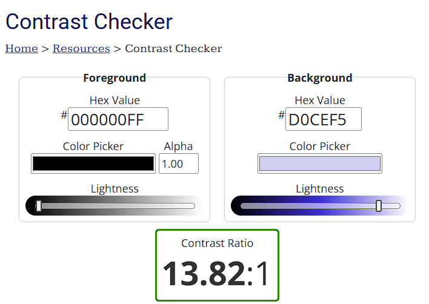

Making a Website Accessible
- ALT Text
- Captions
- Simple Design/layout
- Contrast
Alt text is a written description of an image that screen readers can read out loud. This allows for visually impaired individuals to be able to understand the content on a website. Adding alt text in html is also best practice for if images and other non text is not able to load, the alt text is shown instead to still provide context as to what was supposed to appear
Ex: an image of a dog and the alt text shown when the image doesn't load


Captions for all video media allows for people with any form of hearing impairment too still be able to understand what is being said
Ex: click on the three little dots at the bottom of the video and you can turn on captions
Designing a website that is easy to navigate and understand makes it easier for everyone to travers the website and find the content they are looking for
Contrast is important to make it easy for people to be able to see text on the screen. For all and specially people with visual impairments a bad contrast makes it hard to read content on a page. A contrast ratio of at least 4.5:1 is required to meet the WCAG standards
Ex: This section of the page meets the contrast standards
